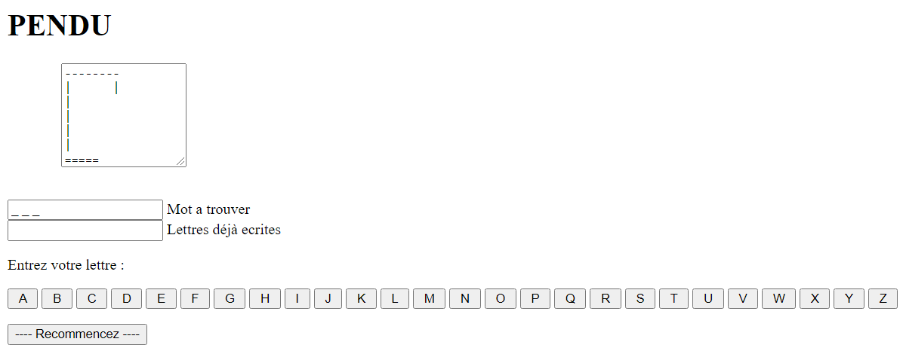

Développeur
Pour ce projet, je devais faire un pendu en javascript avec une interface graphique.
Pour ma part j'ai choisis de le faire en bâtonnet, chose qui est la plus simple a faire je pense, il y a un pop-up qui arrive lorsque l'on gagne ou bien perde, voici un aperçu de ce que cela donne.
Pour ce projet en groupe, nous devions créer un générateur en langage C de grille de mots cachés au format texte.
Nous devions faire en sorte que la taille de la grille soit paramétrable et que les mots soit à chercher dans un fichier de mots.
Pour ce projet en groupe, nous devions réécrire en python des programmes qui sont décris dans le document « les 40 programmes pour CASIO PB700 » 1984
J'etais dans un groupe de 4 donc on devait minimum ecrire 8 programmes qui etaient de type :
4 applications jeux
2 application graphique
2 application mathématique
Et nous devions aussi faire un document analyse et conception.